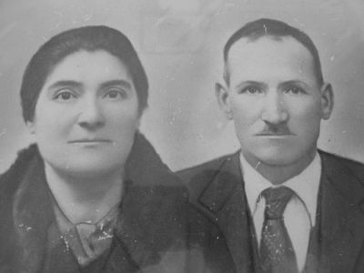
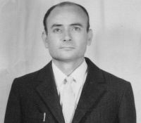

dei Lorenzini? Questo simpatico ed energico vecchietto, curvato dall'artrosi e dalla vecchiaia, era familiare a tutta Quercia e lui non esitava a salutare tutti quanti. Ci si aspettava, data la sua vitalità, che festeggiasse il secolo, ma si fermò prima, solo due anni prima, all'improvviso e serenamente, così come aveva trascorso la sua esistenza. Don Pierino alle cause della morte aggiunse
. Una domenica verso mezzogiorno la grazia tanto richiesta gli venne concessa. Era il 29 dicembre del 1987, tra le feste di Natale e ci si rimase male.

Stigliano
Giovacchino era nato il 13 luglio 1890 da Santi e Angiolina Bernini a Stigliano nel Comune di Sovicille in una famiglia di coloni.
Giovacchino Lorenzini e la moglie Ida in un ritoccato quadretto degli anni Trenta.
Quell'anno al podere Piaggio, con la sua nascita, la famiglia Lorenzini raggiunse il numero di sedici componenti. Era sempre viva Assunta, la nonna vedova del più antico Giovacchino, di 65 anni, e il capoccio era Celso, fratello del babbo Santi, sposato con Cesira Vivi dai quali era nata la piccola Rosa di appena 3 anni. Convivevano anche gli altri fratelli tra i quali Virgilio con la sua famigliola e i celibi Carlo (1868), Gaetano (1870), e Michele (1873). Giovacchino aveva ereditato il nome dal nonno, nato nel 1834 a Brenna, e morto il 9 dicembre 1886 in Stigliano a 52 anni d'età. Il nonno era stato padre, con Assunta Biagi, di dieci figli, alcuni persi, come Virgilio il primogenito nato nel 1856 e vissuto soltanto 3 anni.
Brenna
Per tutto l'Ottocento, prima di Stigliano la famiglia Lorenzini aveva dimorato a Brenna e si era confusa con numerose altre famiglie Lorenzini della zona, senza stretti rapporti parenterali. Lì nacque il 27 marzo 1806 Pietro figlio di Antonio del fu Giuseppe e di Luigia Geri battezzato a Rosia. Non essendoci documentata la nascita del padre Antonio né a Rosia né in altre pievi della zona, né risultando altre registrazioni anagrafiche anteriori si può affermare che i Lorenzini abbiano posto la loro residenza a Brenna verso la fine del Settecento con provenienza sconosciuta, probabilmente dal grossetano. A Brenna, di Antonio e Luigia Geri sono registrati alcuni figli: il detto Pietro, Bernardo (1807), Maria (1808) e Rosa (+1823). Antonio morirà a 53 anni nel 1832. Pietro, come altri componenti, in quei decenni centrali dell'Ottocento e sempre definito
"zappaterra" e la moglie
"filandaia".
Pietro
Pietro sposò Maddalena Centini dai quali discesero Giuseppe e Giovacchino che a sua volta ammogliato con Assunta Biagi diede vita a Santi il padre del nostro Giovacchino. Pietro lasciò questa terra il 3 marzo 1867.
Santi
Santi dunque fu il padre del Giacchino che abbiamo conosciuto. Di lui si conoscono un altro figlio, Egidio, del 17 agosto 1888, maggiore quindi, di Giacchino e tre femmine. Il trasferimento dal podere Brenna al podere Camporlfi di Stigliano si fa risalire al 1881. Dopo pochi anni avviene lo spostamento al podere Piaggio dove nacque Giovacchino nel 1890. Egli passa l’infanzia a Stigliano, poi cambia completamente zona e si trasferisce con tutta la famiglia al podere Africa di Vagliagli. C'è il babbo Santi, il fratello Egidio e le tre sorelle. Nonostante il podere richieda un discreto impegno, Egidio e Giovacchino abbandonano la famiglia per costruirsene una propria. Lasciano, si può dire nei guai, Santi e le sorelle che impossibilitati a continuare abbandonano l'agricoltura e tornano a Poggibonsi. Ritroviamo i due fratelli nel 1916 a Casa Volterrani e al Mulinaccio di Pievasciata. A Casa Volterrani Giovacchino vive con la moglie Ida Bruni di Silvio e fu Margherita Gagliardi nata il 17 ottobre 1895 a S. Giusto in Salcio e sposata a Vagliagli il 27 febbraio 1914 quando Giacchino abitava a Faule, e la piccola Leda di due anni. Al Mulinaccio Egidio vive con la moglie Elvira Rustici e la figliastra Emma. Le due famiglie devono aver seguito strade diverse perché Giovacchino proviene da S. Giovanni a Cerreto, e si ricorda una sua permanenza a Chieci, mentre Egidio viene da Lecchi. Egidio è bracciante e boscaiolo e da Elvira avrà successivamente un figlio, Gino. A Casa Volterrani Giacchino è salariato di fattoria e fa un po' di tutto.
Si ricorda di lui un fatto curioso che lo portò alla decisione di lasciare quelle terre. Il nostro Giacchino andò al mercato a Siena a comprare le scarpe per il piccolo Duilio di quattro anni. Il fattore Papponi, ingiustamente, gli levò due giornate. Era avvenuto che la sera precedente Giacchino si era portato a Scopeto dal padrone per ottenere il permesso di recarsi a Siena. Il padrone era occupato e il fattore lo fece aspettare tanto che Giacchino si attardò e tornò a casa a notte alta. Per questa perdita di tempo il fattore gli addebitò due giornate di lavoro. Giacchino perse la sua santa calma e si inferocì:
"Gli stacco l'orecchi", minacciava rabbioso contro il fattore, e fu in quel frangente che prese la decisione di partire in quell'aprile del 1924.

Duilio Lorenzini
Tornò al Tinello di Montalbuccio sotto il Pallini, e per lui va a lavorare saltuariamente anche in Maremma, mentre la famiglia accresciuta con Rosina (1925), rimaneva a Montalbuccio. Solo due anni vi rimasero e poi fecero ritorno nel Chianti, a Pornano di S. Fedele. Altri quattro anni lì, poi finalmente Giacchino entra nel popolo di Quercegrossa dopo avervi girato intorno per decenni. Il 16 aprile del 1929 sono coloni a Belvederino al posto dei Giannini. Giacchino ha 39 anni, Duilio 9, ma con le donne può mandare avanti il podere. Nel 1930 arriverà Ivo e sarà l'ultimo figlio. Anche a Belvederino si ricorda che avendo poca terra lavorava per la fattoria e faceva anche l'oliandolo al frantoio
“e non dormiva mai in quei giorni".
Era dura la vita a Belvederino, ma la famiglia Lorenzini crebbe bene e cominciarono i matrimoni: Leda si sposò il 16 gennaio del 1935 con Dino Castagnini di Quercegrossa mentre, dopo guerra, Rosina l'11 novembre del 1947 si unì a Lorenzo Bianciardi di Poggiagrilli. Fu in quell'anno 1947 che i Lorenzini abbandonarono Belvederino e presero la via di Lornano rimanendo mezzadri fino al 1960 circa.
Duilio, prigioniero per molti anni durante la guerra visse celibe fino al 1970. Ivo, che si era sposato il 27 febbraio del 1954 con Elia Minucci dalla quale ebbe Francesca e Graziano, aveva cominciato a lavorare nell'edilizia e nel 1970 rientrarono tutti a Quercegrossa nella loro nuova abitazione al Poggio. Era la decima o l'undicesima casa per Giacchino. Si ritorna così al 29 dicembre 1987 quando la sua lunga vita si spense, seguito alcuni anni dopo dalla moglie Ida e con questi due naturali eventi si chiuse per sempre la storia più antica dei Lorenzini.
Giacchino e Ida in casa a Quercegrossa, festeggiati per il loro 75° anniversario delle nozze.
Ida Bruni in Lorenzini
LORENZINI LUIGI (1911-1914); mezzadri; Gallozzole; da Asciano.
Dal 1 aprile 1911 al 10 aprile 1914 la famiglia di Luigi del fu Agostino Lorenzini abitò uno dei poderi delle Gallozzole. Vennero da Asciano in undici persone e ripartirono in quattordici tre anni dopo diretti a Castellina in Chianti. Alle Gallozzole nacquero Dino il 12 ottobre del 1912 da Luigi e Isola Paolini, comare Giulia del Bruttini, e Corrado il 10 marzo del 1913 da Giacomo e Cesira Bianconi. Questi gli unici dati della loro presenza.
LORENZONI (1953-1964); mezzadri; Sornano/Pietralta;
da Monte Sante Marie di Asciano.
Una fra le ultime famiglie di coloni arrivate a Quercegrossa negli anni Cinquanta furono i Lorenzoni entrati a Sornano nel 1953. Dopo cinque anni si spostano a Pietralta dove rimangono fino al 1964 quando abbandonano la terra e si trasferiscono a Certaldo trovando occupazione nell’industria alimentare. Famiglia giovane di sei persone comprendeva il capoccio Dino, la mogli Azelia, il figlio Elvio con le sorelle Elia, Pia e Luciana. Rimasero pochi anni integrandosi bene nel paese e in questo spazio di tempo si registrò il matrimonio di Elvio il 9 aprile 1964 con Marina dei Morini di Casagrande di Petroio, anch'essa recente residente. Dopo l’esperienza di Certaldo nel 1972 ritornano a S. Stefano di Basciano e oggi Elvio risiede a Castellina Scalo.
Inizio pagina
Indice famiglie del '900
Indice dei Capitoli